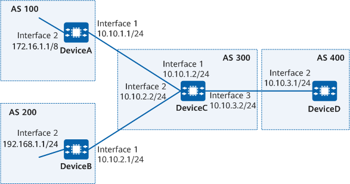

Example for Configuring BGP Route Dampening
Networking Requirements
As shown in Figure 1, all devices are configured with BGP. DeviceA is in AS 100, DeviceB is in AS 200, DeviceC is in AS 300, and DeviceD is in AS 400. EBGP runs between DeviceC and DeviceA, between DeviceC and DeviceB, and between DeviceC and DeviceD. DeviceC applies different route dampening policies for routes from different EBGP neighbors. BGP route dampening can be configured to suppress unstable routes and improve network stability.

In this example, interface 1, interface 2, and interface 3 represent 10GE0/0/1, 10GE0/0/2, and 10GE0/0/3, respectively.

To complete the configuration, you need the following data:
Router IDs and AS numbers of DeviceA, DeviceB, DeviceC, and DeviceD
Name of the route dampening policy to be applied to DeviceC
Precautions
During the configuration, note the following:
BGP route dampening applies only to EBGP routes.
Set a small MaxSuppressTime value for routes with smaller destination address masks.
- To improve security, you are advised to deploy BGP security measures. For details, see "Configuring BGP Authentication." Keychain authentication is used as an example. For details, see Example for Configuring Keychain Authentication for BGP.
Configuration Roadmap
The configuration roadmap is as follows:
Establish EBGP connections between DeviceA and DeviceC, between DeviceB and DeviceC, and between DeviceD and DeviceC.
Configure route dampening policies on DeviceC.
Procedure
- Assign an IP address to each interface. For detailed configurations, see Configuration Scripts.
- Configure BGP connections.
# Configure DeviceA.
[DeviceA] bgp 100 [DeviceA-bgp] router-id 10.1.1.1 [DeviceA-bgp] peer 10.10.1.2 as-number 300 [DeviceA-bgp] ipv4-family unicast [DeviceA-bgp-af-ipv4] network 10.0.0.0 255.0.0.0 [DeviceA-bgp-af-ipv4] quit [DeviceA-bgp] quit
# Configure DeviceB.
[DeviceB] bgp 200 [DeviceB-bgp] router-id 10.2.2.2 [DeviceB-bgp] peer 10.10.2.2 as-number 300 [DeviceB-bgp] ipv4-family unicast [DeviceB-bgp-af-ipv4] network 10.1.1.0 255.255.255.0 [DeviceB-bgp-af-ipv4] quit [DeviceB-bgp] quit
# Configure DeviceC.
[DeviceC] bgp 300 [DeviceC-bgp] router-id 10.3.3.3 [DeviceC-bgp] peer 10.10.1.1 as-number 100 [DeviceC-bgp] peer 10.10.2.1 as-number 200 [DeviceC-bgp] peer 10.10.3.1 as-number 400 [DeviceC-bgp] quit
# Configure DeviceD.
[DeviceD] bgp 400 [DeviceD-bgp] router-id 10.4.4.4 [DeviceD-bgp] peer 10.10.3.2 as-number 300 [DeviceD-bgp] quit
# Check the BGP peers of DeviceC.
[DeviceC] display bgp peer BGP local router ID : 10.3.3.3 Local AS number : 300 Total number of peers : 3 Peers in established state : 3 Peer V AS MsgRcvd MsgSent OutQ Up/Down State PrefRcv 10.10.1.1 4 100 3 3 0 00:00:01 Established 0 10.10.2.1 4 200 3 3 0 00:00:00 Established 0 10.10.3.1 4 400 3 3 0 00:00:01 Established 0
The command output shows that the status of the BGP connection between DeviceC and each peer is Established.
- Configure BGP route dampening policies.
# Configure an IP prefix list named prefix-a on DeviceC to permit the routes with prefix 172.16.1.0/24.
[DeviceC] ip ip-prefix prefix-a index 10 permit 172.16.1.0 24
# Configure an IP prefix list named prefix-b on DeviceC to permit the routes with prefix 192.168.1.0/24.
[DeviceC] ip ip-prefix prefix-b index 20 permit 192.168.1.0 24
# Configure a route-policy named dampen-policy on DeviceC to apply different dampening policies to the routes with different prefix lengths.
[DeviceC] route-policy dampen-policy permit node 10 [DeviceC-route-policy] if-match ip-prefix prefix-a [DeviceC-route-policy] apply dampening 10 1000 2000 5000 [DeviceC-route-policy] quit [DeviceC] route-policy dampen-policy permit node 20 [DeviceC-route-policy] if-match ip-prefix prefix-b [DeviceC-route-policy] apply dampening 10 800 3000 10000 [DeviceC-route-policy] quit
# Apply the route dampening policies to the routes that flap.
[DeviceC] bgp 300 [DeviceC-bgp] ipv4-family unicast [DeviceC-bgp-af-ipv4] dampening route-policy dampen-policy [DeviceC-bgp] quit
Verifying the Configuration
# Check the configured BGP route dampening parameters on DeviceC.
[DeviceC] display bgp routing-table dampening parameter Maximum Suppress Time(in second) : 3973 Ceiling Value : 16000 Reuse Value : 750 HalfLife Time(in second) : 900 Suppress-Limit : 2000 Route-policy : dampen-policy
Configuration Scripts
DeviceA
# sysname DeviceA # interface 10GE0/0/1 ip address 10.10.1.1 255.255.255.0 # interface 10GE0/0/2 ip address 172.16.1.1 255.0.0.0 # bgp 100 router-id 10.1.1.1 peer 10.10.1.2 as-number 300 # ipv4-family unicast network 10.0.0.0 255.0.0.0 peer 10.10.1.2 enable # return
DeviceB
# sysname DeviceB # interface 10GE0/0/1 ip address 10.10.2.1 255.255.255.0 # interface 10GE0/0/2 ip address 192.168.1.1 255.255.255.0 # bgp 200 router-id 10.2.2.2 peer 10.10.2.2 as-number 300 # ipv4-family unicast network 10.1.1.0 255.255.255.0 peer 10.10.2.2 enable # return
DeviceC
# sysname DeviceC # interface 10GE0/0/1 ip address 10.10.1.2 255.255.255.0 # interface 10GE0/0/2 ip address 10.10.2.2 255.255.255.0 # interface 10GE0/0/3 ip address 10.10.3.2 255.255.255.0 # bgp 300 router-id 10.3.3.3 peer 10.10.1.1 as-number 100 peer 10.10.2.1 as-number 200 peer 10.10.3.1 as-number 400 # ipv4-family unicast dampening route-policy dampen-policy peer 10.10.1.1 enable peer 10.10.2.1 enable peer 10.10.3.1 enable # ip ip-prefix prefix-a index 10 permit 172.16.1.0 24 # ip ip-prefix prefix-b index 20 permit 192.168.1.0 24 # route-policy dampen-policy permit node 10 if-match ip-prefix prefix-a apply dampening 10 1000 2000 5000 # route-policy dampen-policy permit node 20 if-match ip-prefix prefix-b apply dampening 10 800 3000 10000 # return
DeviceD
# sysname DeviceD # interface 10GE0/0/1 ip address 10.10.3.1 255.255.255.0 # bgp 400 router-id 10.4.4.4 peer 10.10.3.2 as-number 300 # ipv4-family unicast peer 10.10.3.2 enable # return